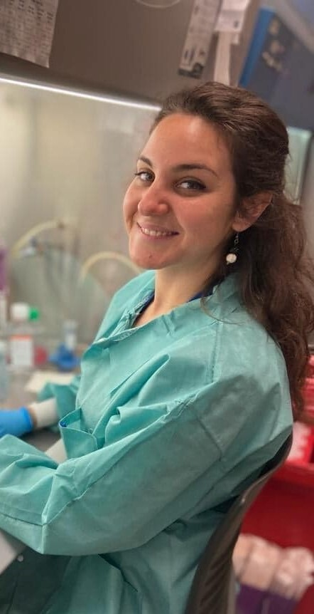

There’s a special feeling that comes with every discovery in science, but for me, that joy started long before I even realized it would become my life’s work. It began with a simple yet profound moment, when I first went to the doctor for blood work. I was a child, probably 3 years old, but my curiosity was undeniable. I remember feeling a surge of excitement when I learned about the cells inside me, the tiny warriors, ready to fight off invaders and keep me healthy. I wanted to know everything about them. Why did I have so many different kinds? What did they do? I remember asking my father to make sure he booked the appointment for my blood work every year on my birthday – that was the present I wanted!
This fascination with the inner workings of my own body sparked my love for science. As I got older, that curiosity eventually led me to a career as a researcher studying the immune system. I find it so exciting that the answers we’re looking for often lie right inside us. For example, my research focuses on how we can stimulate the cells that the body already produces to fight against harmful entities like cancer or dangerous pathogens. It’s like discovering that the solutions to our biggest health challenges are already available to us, we just need to learn how to unlock their potential. Think about it: your body has an incredible army of cells, each with a specific job to do. The magic of immunology is understanding how these cells work together, and how we can harness them to fight diseases more effectively. It’s a bit like being the conductor of a symphony, where you get to bring all these parts into harmony to create something powerful. And what excites me the most is that this research could lead to breakthroughs that affect future generations. Imagine a world where you can activate your body’s defenses to prevent diseases like cancer before they even start. That’s the kind of impact I’m striving for.

I am currently a senior researcher at Penn in the Radiation Oncology department, which has been a dream come true, but it certainly wasn’t an easy path. Becoming a scientist required years of study, sleepless nights in the lab, and constant learning and adapting to new challenges. There were times I wanted to give up. Sometimes, I still wish I could have more free time for the things I love, like traveling, singing, dancing, or painting. But every time I get frustrated, I remind myself of the bigger picture: the potential to make a real difference, to change the lives of patients, and to contribute to the scientific community.

There’s often a misconception that science is a lonely pursuit, but the truth is, it’s a community effort. I’m deeply grateful to the people who believed in me along the way, including mentors, colleagues, and family. Without their support, I wouldn’t be at Penn today, working to unlock the secrets of the immune system. Here, I’m fortunate to be part of a team that pushes the boundaries of what we know, helping each other with experiments, and sharing with each other successes and challenges of our science. The work we do is driven by a collective belief that, together, we can make the world a better place through discovery and innovation.
As I look ahead to the future of science, I’m filled with excitement not just for what we can accomplish in my lifetime, but for what the next generation of scientists will achieve. One of my greatest joys will be passing on the knowledge I’ve gained to the young scientists who will carry the torch forward. Teaching and mentoring are integral parts of my journey, because, just like others did for me, I want to inspire the next wave of innovators to push the boundaries of what’s possible. Science isn’t just about asking questions – it’s about cultivating the curiosity, creativity, and perseverance to find the answers. It’s about turning what seems like an impossible dream into something tangible, something that can change lives. Whether you’re studying the immune system, exploring the depths of space, or unlocking the secrets of the brain, science is about making the world a better place through knowledge and discovery. Every day in the lab is a new opportunity to learn, to grow, and to make an impact. I feel fortunate to be part of this incredible journey, and I can’t wait to see where it leads. I hope that, through my work, I can share a little bit of that joy and inspire others to be just as excited about the world of science as I am.